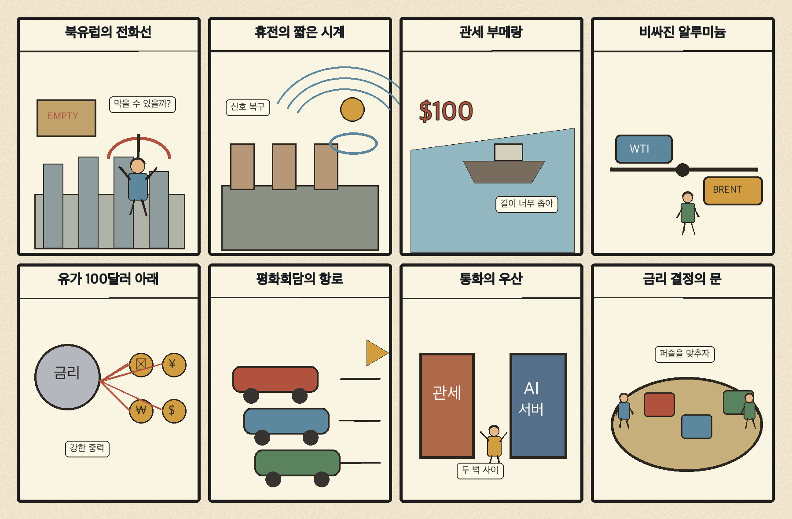
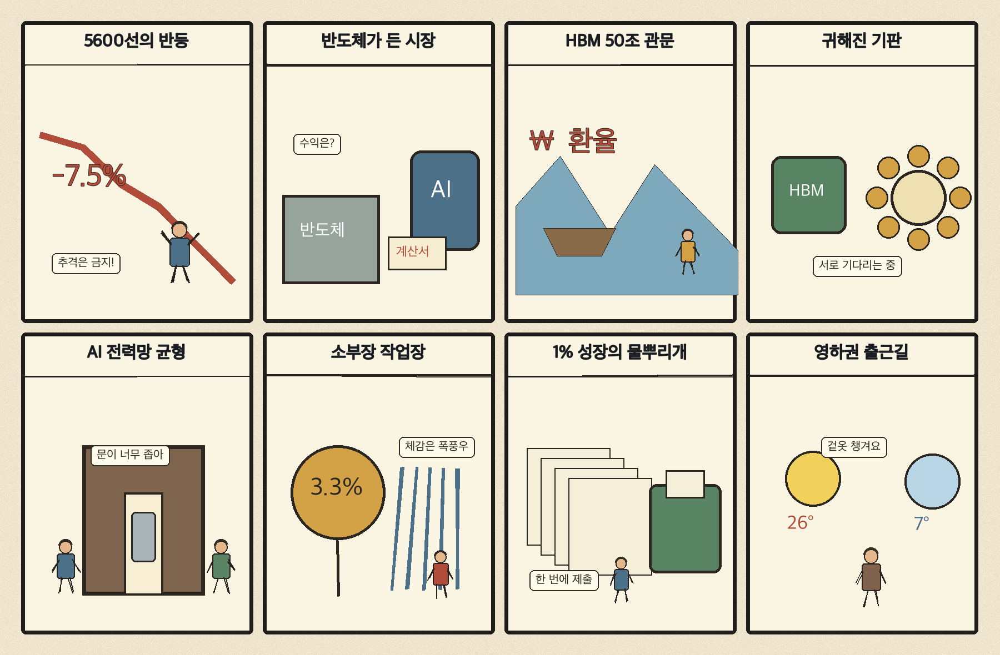

01
로켓랩 · 54.10→58.31달러 · +7.78%
내용요약 성장주 강세 속 시가 대비 +7.78%로 조사군 최상위였습니다.
예상여파 국내 우주항공주는 미국 단일 종목의 급등보다 실제 수주·발사 일정과 밸류에이션을 우선 확인해야 합니다.
MORNING_BRIEFING_20261028
작성 시각: 2026-10-28 06:34 KST · 직전 미국 정규장과 2026-10-28 KST 당일 공개 기사 기준
직전 미국 정규장인 10월 27일 뉴욕증시는 다우 +0.03%, S&P 500 +0.60%, 나스닥 +1.18%로 상승했습니다. 연준 금리 결정을 앞두고 인공지능 투자 기대가 기술주를 끌어올렸고, 국제유가는 중동 협상 기대에 WTI 100달러 아래로 내려왔습니다. 전일 KOSPI도 +3.09% 반등했으므로 오늘은 호재의 연속성보다 개장 갭과 외국인 현·선물 수급을 우선 확인해야 합니다.
| 지수 | 종가 | 등락률 | 한국 증시 시사점 |
|---|---|---|---|
| 다우존스 | 52,377.57 | +0.03% | 경기민감주는 보합권 |
| S&P 500 | 7,722.60 | +0.60% | AI·반도체 투자심리 개선 |
| 나스닥 종합 | 26,477.81 | +1.18% | AI·반도체 투자심리 개선 |
AI 투자 기대와 성장주 강세가 기술주를 밀었습니다.
중동 평화회담 기대에 유가가 1.8% 하락했습니다.
전일 급반등했지만 시가 대비로는 -0.36%, KOSDAQ은 +0.10%였습니다.
급반등 뒤 갭 위험과 필수 검증 데이터 부족으로 현금 관망입니다.
10월 27일 보고서는 국내 변동성과 필수 수급·컨센서스·유사 조건 표본 부족으로 공식 추천을 내지 않았습니다. 사후에 종목을 추가하지 않습니다.
| 시장 | 종가 | 등락률 | 기준 |
|---|---|---|---|
| KOSPI | 5,638.34 | +3.09% | 10월 27일 · 시가 대비 -0.36% |
| KOSDAQ | 743.83 | +2.29% | 10월 27일 · 시가 대비 +0.10% |
| 다우존스 | 52,377.57 | +0.03% | 미국 10월 27일 정규장 |
| S&P 500 | 7,722.60 | +0.60% | 미국 10월 27일 정규장 |
| 나스닥 종합 | 26,477.81 | +1.18% | 미국 10월 27일 정규장 |
로켓랩이 시가 대비 +7.78%로 조사군 최상위였습니다.
슈퍼마이크로 +5.25%, AMD +3.85%, 마벨 +2.84%로 강했습니다.
보잉이 생산 목표 지연 보도와 함께 시가 대비 -8.35% 급락했습니다.
액센츄어 -3.88%, 엑슨모빌 -2.03%로 약했습니다.
내용요약 성장주 강세 속 시가 대비 +7.78%로 조사군 최상위였습니다.
예상여파 국내 우주항공주는 미국 단일 종목의 급등보다 실제 수주·발사 일정과 밸류에이션을 우선 확인해야 합니다.
내용요약 인공지능 서버 투자 기대 속 시가 대비 +5.25% 상승했습니다.
예상여파 서버·냉각·전력 공급망 심리에는 긍정적이나 높은 변동성과 고객 집중 위험을 함께 봐야 합니다.
내용요약 인공지능 가속기 채택 확대 기대 속 시가 대비 +3.85% 올랐습니다.
예상여파 국내 HBM·기판 공급망에는 우호적이지만 엔비디아와의 경쟁 및 실제 매출 전환 속도가 관건입니다.
내용요약 737 생산 목표가 2027년으로 미뤄졌다는 보도와 함께 시가 대비 -8.35% 급락했습니다.
예상여파 항공 공급망의 생산 회복 기대가 늦춰질 수 있어 납품 일정과 현금흐름을 점검해야 합니다.
내용요약 기술주 상승장에서도 시가 대비 -3.88%로 부진했습니다.
예상여파 기업 인공지능 투자가 늘어도 컨설팅 매출의 전환 속도와 인력 비용에 따라 종목 차별화가 커질 수 있습니다.
미국 나스닥 상승과 WTI 100달러 하회는 국내 반도체·데이터센터 공급망에 우호적입니다. 다만 전일 KOSPI는 종가 기준 +3.09% 급반등했지만 시가 대비로는 -0.36%였고, KOSDAQ의 시가 대비 상승률은 +0.10%에 그쳤습니다. 개장 초 갭 상승을 추격하기보다 반도체 강세가 지수 전반으로 확산되는지, 원·달러 환율과 외국인 선물 매수가 이어지는지 확인하는 편이 낫습니다.
오늘은 추천 없음 — 현금 관망
전일까지의 외국인·기관 수급, 컨센서스 변화와 30건 이상 유사 조건 표본을 함께 확보해 종합점수 75점·상승확률 60%·예상 손익비 1.5를 모두 검증한 종목이 없습니다. 전일 KOSPI +3.09% 급반등 뒤 장전 갭 위험까지 있어 추격 진입 기준을 충족하지 못했습니다.
관심 연결종목 HBM·AI 서버·데이터센터 전력은 관찰 대상일 뿐 매수 추천이 아닙니다. 과도한 갭 상승 종목은 추격매수를 금지합니다.
정책금리와 향후 물가·성장 판단이 장기금리와 기술주를 흔들 수 있습니다.
WTI 100달러 하회가 이어지는지와 평화회담의 실제 진전을 봅니다.
전일 급반등 뒤 매수세가 이어지는지, 개장 갭이 유지되는지 확인합니다.
미국 AMD·서버주 강세가 국내 공급망으로 확산되는지 점검합니다.
핵심 요약: 인공지능 반도체 경쟁은 전력당 성능과 공급망 다변화로 옮겨가고 있습니다. HBM 수출 50조원 돌파와 원전 수명 연장은 메모리·전력 인프라의 중요성을 보여주며, 의료 현장에서도 인공지능의 실사용이 확산하고 있습니다.
내용요약 인공지능 반도체 경쟁의 기준이 단순 연산속도에서 전력당 성능으로 이동하고 있다는 당일 보도입니다.
예상여파 전력비와 냉각비가 데이터센터 총비용을 좌우하면서 저전력 칩·전력반도체·냉각 기술의 전략적 가치가 커질 수 있습니다.
내용요약 메타가 AMD 인스팅트 가속기를 채택하며 인공지능 반도체 조달 다변화를 서두른다는 당일 보도입니다.
예상여파 엔비디아 중심 공급망에 경쟁이 강화되고 국내 HBM·기판 업체에는 고객 다변화 기회가 열릴 수 있습니다.
내용요약 한국의 HBM 수출이 분기 기준 처음 50조원을 돌파했다는 조선일보 당일 보도입니다.
예상여파 고부가 메모리 수출은 무역수지에 우호적이지만 높은 기대가 주가에 선반영됐는지 함께 점검해야 합니다.
내용요약 고리 원전 3·4호기의 수명 연장으로 대규모 인공지능 데이터센터 전력 수요를 뒷받침할 수 있다는 당일 보도입니다.
예상여파 전력 공급 안정성에는 긍정적이지만 안전성 검증과 송전망 확충이 실제 가동 효과를 좌우합니다.
내용요약 장기간 축적한 임상 경험에 디지털 기술을 접목해 인공지능으로 중증 환자를 조기에 발견하는 사례를 다룬 보도입니다.
예상여파 의료 인공지능의 현장 도입은 진단 보조 시장을 넓히지만 검증·책임·개인정보 기준도 함께 강화될 전망입니다.
핵심 요약: 북유럽의 대러 외교 채널과 우크라이나 국지휴전이 협상 기대를 높였고, 중동 평화회담 기대는 WTI를 100달러 아래로 낮췄습니다. 반면 캐나다산 알루미늄 관세의 부메랑과 아시아 통화 약세는 무역·물가 부담을 남겼습니다.
내용요약 노르웨이·핀란드 정상이 러시아 대통령과 통화하자 북유럽 내부에서 외교 공조를 둘러싼 반발이 커졌다는 연합뉴스 보도입니다.
예상여파 우크라이나 전쟁의 협상 창구를 넓히려는 시도와 유럽 안보 공조 사이의 긴장이 커질 수 있습니다.
내용요약 중재를 계기로 러시아와 우크라이나가 제한적 국지휴전에 들어갔지만 키이우에서는 폭발음이 이어졌다는 당일 보도입니다.
예상여파 휴전 신호는 위험 프리미엄을 낮출 수 있으나 현장 이행이 불안정하면 에너지·방산 시장 변동성이 유지됩니다.
내용요약 캐나다산 알루미늄에 대한 높은 관세가 미국 내 가격 상승으로 되돌아왔다는 연합뉴스 보도입니다.
예상여파 관세가 자국 제조업 원가를 높이는 부메랑 효과가 확인되며 자동차·건설·포장재 비용 부담이 커질 수 있습니다.
내용요약 중동 평화회담 기대에 WTI가 1.8% 하락해 배럴당 100달러 아래에서 마감했다는 연합뉴스 보도입니다.
예상여파 한국의 수입물가와 항공·운송 비용에는 우호적이지만 협상 결렬 시 유가가 다시 급등할 위험은 남아 있습니다.
내용요약 인공지능 거품론과 중동발 유가 충격 속 아시아 통화가 동반 약세를 보인다는 당일 보도입니다.
예상여파 원화 약세가 이어지면 외국인 수급과 수입물가에 부담이 되고 각국 통화당국의 방어 압력이 높아집니다.

핵심 요약: 반도체 강세로 코스피가 5600선을 회복했고 HBM 수출 50조원 돌파와 1% 성장이 경제 심리를 받쳤습니다. 소부장 정책의 실제 계약 전환을 확인하는 한편, 오늘 출근길 영하권 한파에도 대비해야 합니다.
내용요약 반도체주 급등으로 코스피 매수 사이드카가 발동되고 지수가 5600선을 회복했다는 당일 보도입니다.
예상여파 급반등은 투자심리를 개선하지만 프로그램 매매 변동성이 큰 만큼 장중 추격보다 수급의 지속성을 확인해야 합니다.
내용요약 한국의 HBM 수출이 분기 기준 50조원을 처음 넘어섰다는 당일 보도입니다.
예상여파 반도체 수출과 무역수지에는 긍정적이지만 업황 기대가 개별 종목 실적에 실제 반영되는지 구분해야 합니다.
내용요약 산업부가 소부장·뿌리기술대전을 열어 첨단기술과 공급망 성과를 공유한다는 뉴시스 보도입니다.
예상여파 국산화와 조달 연계가 강화될 수 있으나 전시 참여만으로 수혜를 단정하지 말고 실제 계약을 확인해야 합니다.
내용요약 반도체와 정부지출이 한국 경제의 1% 성장을 이끌어 전망치를 크게 웃돌았다는 당일 보도입니다.
예상여파 성장률 개선은 투자심리에 우호적이지만 민간소비와 비반도체 부문으로 회복이 확산되는지가 관건입니다.
내용요약 서울 아침 기온이 2도, 내륙 일부는 영하권으로 내려가며 한파특보가 발효됐다는 YTN 보도입니다.
예상여파 출근길 건강과 도로 안전에 유의하고 농작물·시설물의 냉해와 에너지 수요 증가에 대비해야 합니다.
